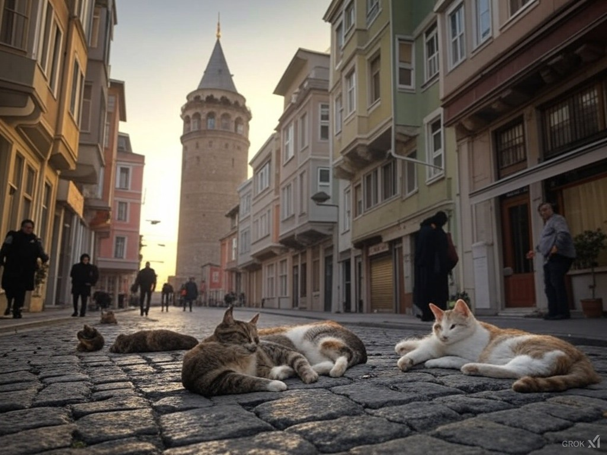

İstanbul, hem Doğu ile Batı’yı birleştiren eşsiz bir şehir olmasıyla hem de kedileriyle ünlüdür. ? Şehrin tarihi sokaklarında dolaşırken, her köşede bir kedi görmek mümkündür. ? Bu kediler, İstanbul’un kültürel ve sosyal dokusunun bir parçasıdır. ? Yerel halk ve turistler, kedilere büyük ilgi gösterir. ? İnsanlar, kedilere yiyecek verir, onları sever ve hatta bazen evlerine alır. ? Şehirde kedilere adanmış kafeler bile bulunmaktadır. ? İstanbul kedileri, fotoğrafçılara, yazarlara ve sanatçılara ilham kaynağı olmuştur. ?
